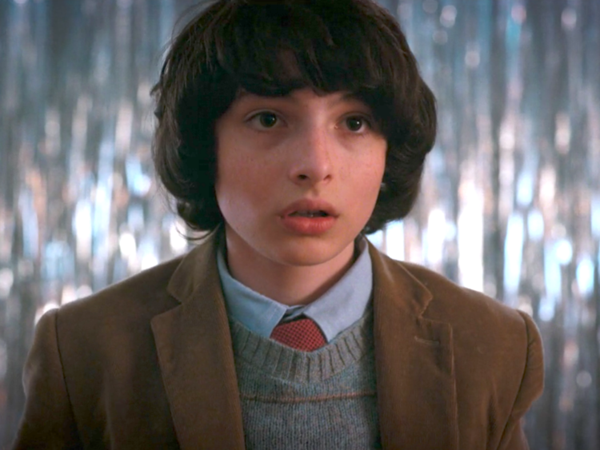

Michael "Mike" Wheeler, interpretado por Finn Wolfhard, é um dos personagens principais na série original da Netflix, Stranger Things. Ele é o melhor amigo de Will Byers, Lucas Sinclair e Dustin Henderson, também sendo irmão de Nancy. Ele ficou amigo de Eleven, eventualmente formando uma forte ligação com ela.